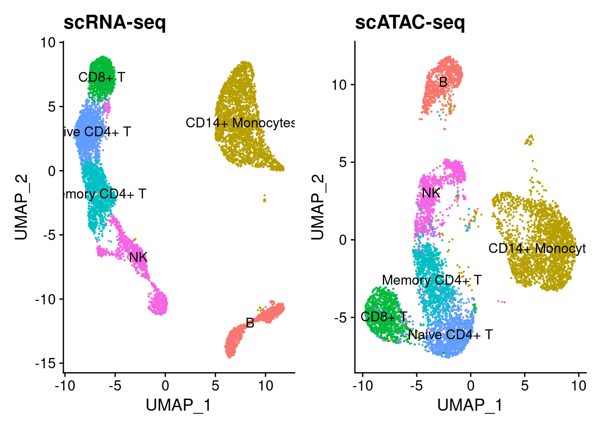

Assessing Seurat Integration
Alan Selewa
setwd('/project2/gca/aselewa/integration_benchmarks/')
suppressMessages(source('seurat_integration.R'))s.rna <- readRDS('data/rna_seurat.rds')
s.atac <- readRDS('data/atac_seurat.rds')
anchors <- readRDS('data/anchors_kanchor_5.rds')p1 <- DimPlot(s.rna, label=T, group.by='clusters') + NoLegend() + ggtitle('scRNA-seq')
p2 <- DimPlot(s.atac, label=T, group.by='clusters') + NoLegend() + ggtitle('scATAC-seq')
p1 + p2
cells1 <- anchors@anchors[,"cell1"]
cells2 <- anchors@anchors[,"cell2"]num_cells <- c(length(unique(cells1)), length(unique(cells2)))/length(Cells(s.rna))
names(num_cells) <- c('RNA', 'ATAC')
barplot(num_cells, ylab='Proportion of Cells',xlab='Assay', main='Contribution to Anchors')
freq_cells1 <- table(cells1)
hist_cells1 <- rep(0, max(freq_cells1))
for(i in 1:max(freq_cells1)){
hist_cells1[i] <- sum(freq_cells1==i)
}
barplot(hist_cells1, names.arg = 1:max(freq_cells1), ylab='Number of Cells', xlab='Frequency', main='Frequency of cells used in Anchors (RNA)')same_cell <- c(sum(cells1 == cells2), sum(cells1 != cells2))
names(same_cell) <- c('same cell', 'different cell')
barplot(same_cell, ylab='Anchors',xlab='Anchor Pairs', main='Anchor Pair Correspondence')
cells1_clust <- as.character(s.rna$clusters[cells1])
cells2_clust <- as.character(s.atac$clusters[cells2])
cell_type_agree <- c(sum(cells1_clust != cells2_clust), sum(cells1_clust == cells2_clust))
names(cell_type_agree) <- c('Disagree', 'Agree')
scores_agree <- anchors@anchors[cells1_clust == cells2_clust, "score"]
scores_disagree <- anchors@anchors[cells1_clust != cells2_clust, "score"]
par(mfrow=c(1,2))
barplot(cell_type_agree, ylab='Anchors',xlab='Cell Type Assignment', main='Anchors Cluster Agreement')
boxplot(scores_disagree, scores_agree, names = c('Disagree','Agree'), ylab='Anchor Score', main='Anchor Scores')
Label Transfer
s.atac <- transfer_data(ATAC = s.atac, data = Idents(s.rna), anchors = anchors)## Finding integration vectors## Finding integration vector weights## Predicting cell labelsp1 <- DimPlot(s.rna, label=T) + NoLegend() + ggtitle('scRNA-seq')
p2 <- DimPlot(s.atac, label=T, group.by='RNA_IDENT') + NoLegend() + ggtitle('scATAC-seq')
p1 + p2cell_type_agree <- c(sum(s.atac$RNA_IDENT != s.atac$clusters), sum(s.atac$RNA_IDENT == s.atac$clusters))
names(cell_type_agree) <- c('Disagree', 'Agree')
scores_agree <- s.atac$PREDICTED_SCORE_MAX[s.atac$RNA_IDENT != s.atac$clusters]
scores_disagree <- s.atac$PREDICTED_SCORE_MAX[s.atac$RNA_IDENT == s.atac$clusters]
par(mfrow=c(1,2))
barplot(cell_type_agree, ylab='ATAC Cells',xlab='Transferred Label Status', main='ATAC Label Transfer')
boxplot(scores_agree, scores_disagree, names = c('Disagree','Agree'), ylab='Max Predicted Score', xlab='Transferred Label Status', main='ATAC Label Transfer Max Score')hist(s.atac$PREDICTED_SCORE_MAX, main='Maximum Predicted Score',xlab='Score')
RNA Transfer
Transfer counts
og.data <- as.matrix(s.rna@assays$RNA@data)
imputed.rna <- TransferData(anchorset = anchors, refdata = og.data, weight.reduction = 'cca')## Finding integration vectors## Finding integration vector weights## Transfering 22877 features onto reference dataCorrelations before and after imputations
imputed.rna.mat <- as.matrix(imputed.rna@data)
topN <- order(rowSums(og.data), decreasing = T)[1:100]
topN.imputed <- imputed.rna.mat[topN,]
topN.og <- og.data[topN,]
gene.cor <- rep(0, length(topN))
for(i in 1:length(topN)){
x <- topN.imputed[i,]
y <- topN.og[i,]
gene.cor[i] <- cor(x, y, method = 'pearson')
}n <- dim(imputed.rna.mat)[2]
cell.cor <- rep(0, n)
for(i in 1:n){
bol <- imputed.rna.mat[,i] > 0
x <- imputed.rna.mat[,i][bol]
y <- og.data[,i][bol]
cell.cor[i] <- cor(x, y, method = 'pearson')
}par(mfrow=c(1,2))
hist(cell.cor, xlab='Pearson', main='Cells')
hist(gene.cor, xlab='Pearson', main='Top 100 Genes')
Co-expression of pair markers
Below we check that co-expressed marker genes remain co-expressed in the imputed data
gene.1 <- c("IL7R","IL7R","CD14","FCGR3A","FCER1A","MS4A1")
gene.2 <- c("CCR7","S100A4","LYZ","MS4A7","CST3", "CD79A")
k <- length(gene.1)
imputed.cors <- rep(0, k)
og.cors <- rep(0, k)
text.lab <- rep(0, k)
for(i in 1:k){
imputed.cors[i] <- cor(imputed.rna.mat[gene.1[i],], imputed.rna.mat[gene.2[i],])
og.cors[i] <- cor(og.data[gene.1[i],], og.data[gene.2[i],])
text.lab[i] <- paste0(gene.1[i],'/',gene.2[i])
}plot(og.cors, imputed.cors, pch=16, xlab='Original Data Pearson', ylab='Transfer Data Pearson', xlim = c(-0.2,1), ylim=c(-0.2,1))
text(x = og.cors, y = imputed.cors, labels = text.lab, pos = 4)
abline(a = 0, b = 1, col='red')
As we can see, co-expressed genes remain co-expressed in the transferred RNA.
Enhancer/gene correlations
imputed.rna.mat <- as.matrix(imputed.rna@data)
og.data <- as.matrix(s.rna@assays$RNA@data)Here, we find all genes within 10kb of all peaks in the scATAC-seq data (~62k peaks)
annotations <- suppressWarnings(suppressMessages(GetGRangesFromEnsDb(ensdb = EnsDb.Hsapiens.v86::EnsDb.Hsapiens.v86, verbose = F)))
seqlevelsStyle(annotations) <- "UCSC"
exon_annotations <- annotations[annotations$type=="exon",]
DA_peaks_GR <- granges(s.atac)
DA_peaks_genes <- plyranges::join_overlap_left(x = DA_peaks_GR, y = exon_annotations, maxgap=10000, minoverlap=0)## Warning in .Seqinfo.mergexy(x, y): Each of the 2 combined objects has sequence levels not in the other:
## - in 'x': GL000194.1, GL000195.1, GL000205.2, GL000219.1, KI270713.1, KI270726.1, KI270727.1, KI270728.1
## - in 'y': chrM
## Make sure to always combine/compare objects based on the same reference
## genome (use suppressWarnings() to suppress this warning).peakies <- Signac::GRangesToString(DA_peaks_genes)
genes <- DA_peaks_genes$gene_name
comb <- paste0(peakies, '-', genes)
peakies <- peakies[!duplicated(comb)]
genes <- genes[!duplicated(comb)]
enhancers_genes_df <- cbind(peakies, genes)
enhancers_genes_df <- enhancers_genes_df[!is.na(enhancers_genes_df[,"genes"]),]enhancers_genes_df <- enhancers_genes_df[enhancers_genes_df[,"genes"] %in% rownames(og.data),]
atac.mat <- as.matrix(s.atac@assays$peaks@data)
DA.atac.mat <- atac.mat[enhancers_genes_df[,"peakies"],]
genes.DA.rna.mat <- og.data[enhancers_genes_df[,"genes"],]Get correlations between peaks and true RNA-seq data across all cells
row_by_row_cor <- function(A, B){
p1 <- dim(A)[1]
p2 <- dim(B)[1]
stopifnot(p1 == p2)
rr_cors <- rep(0, p1)
for(i in 1:p1){
x <- A[i,]
y <- B[i,]
if(stats::sd(x) > 0 & stats::sd(y) > 0){
rr_cors[i] <- cor(x, y)
}
else{
rr_cors[i] <- NA
}
}
return(rr_cors)
}gene_enhancer_cor <- row_by_row_cor(A = DA.atac.mat, B = genes.DA.rna.mat)Get correlations between peaks and imputed/transferred RNA-seq data across all cells
genes.DA.imputed.rna.mat <- imputed.rna.mat[enhancers_genes_df[,"genes"],]
gene_enhancer_impt_cor <- row_by_row_cor(A = DA.atac.mat, B = genes.DA.imputed.rna.mat)Compare correlations across 62,160 peak-gene pairs
plot(gene_enhancer_cor, gene_enhancer_impt_cor, xlab='Peak-Gene Pearson (True RNA)', ylab='Peak-Gene Pearson (Transferred RNA)', pch=16)
abline(a = 0, b = 1, col='red')